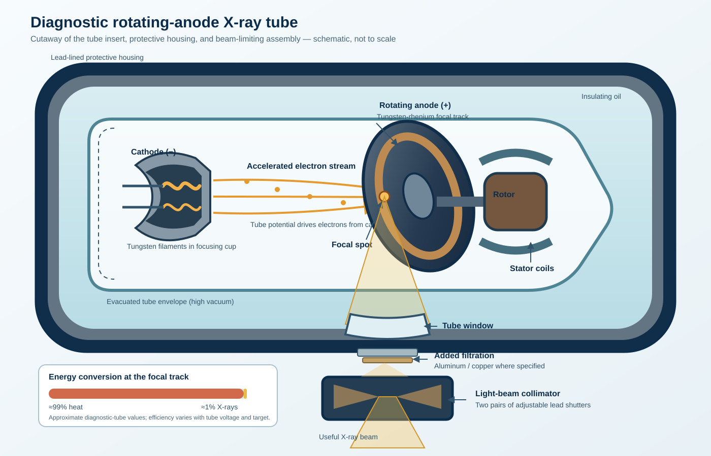

Lab 1 Student Handout
1. Learning Objectives
By the end of this lab session, you should be able to:
- Describe how X-rays are produced inside an X-ray tube and identify its main components.
- Explain the four stages of radiographic image intensity formation.
- Identify and compare the major image receptor types: film, CR, DR, and image intensifiers.
- Distinguish between the radiographer's image recording role and image analysis role.
- Recognize the geometric concepts SID, SOD, and OID.
- Relate each stage of image formation to image quality factors studied in later labs.
- Apply this model to a simulated scenario and submit a complete lab report.
2. Before You Start
- No prior knowledge of X-ray equipment is assumed — everything you need is explained in the lab's Background section.
- Bring a laptop or tablet with a modern web browser (Chrome, Edge, Firefox, or Safari). No installation or internet connection is required after the page loads once.
- Your answers automatically save in your browser as you work. If you plan to switch computers partway through, use the "Export JSON Backup" button first and "Import JSON" on the new computer.
- Read Lecture 1 & 2 (Course Overview and the Radiographer's Role) before this session — this lab builds directly on that material.
3. Background Concepts You Need
3.1 The X-ray Tube
Every exposure begins inside an evacuated tube. A heated cathode filament releases electrons, which are focused and accelerated toward the rotating anode. At the focal spot, roughly 1% of their kinetic energy becomes X-rays and nearly all the remainder becomes heat. The useful beam exits through the tube window, passes through inherent and specified added filtration, and is shaped by the lead shutters of the collimator.

3.2 Beam Geometry — SID, SOD, OID
| Term | Meaning |
|---|---|
| SID | Source-to-Image Distance — tube target to the image receptor |
| SOD | Source-to-Object Distance — tube target to the patient/part being imaged |
| OID | Object-to-Image Distance — patient/part to the image receptor |
You will manipulate these distances quantitatively with live sliders in Lab 2. This week, focus on recognizing what each term means.
3.3 The Four Stages of Image Intensity Formation
| # | Stage | What Happens | Key Influencing Factors |
|---|---|---|---|
| 1 | Primary Beam Propagation | X-rays travel from the tube target toward the patient | kVp, mAs, filtration, focal spot size, distance (inverse square law) |
| 2 | Patient Interaction | Beam is attenuated passing through tissue, forming the remnant beam | Patient thickness, tissue density, atomic number |
| 3 | Image Capture | Remnant beam is captured by the receptor | Receptor sensitivity, dynamic range, intrinsic noise/resolution |
| 4 | Image Processing | Captured signal becomes the viewable radiograph | Chemical development (film) or computer processing (digital) |
3.4 Image Receptor Families

- Screen-Film Cassette: Forms a hidden "latent image" requiring wet chemical processing in a darkroom (explored fully in Lab 3).
- CR Cassette: Uses a reusable photostimulable phosphor plate, read by a laser scanner into a digital image.
- DR Flat Panel: Converts incident X-rays into electrical charge using an indirect scintillator-photodiode pathway or a direct photoconductor pathway — no cassette scanning.
- Image Intensifier: Converts the beam into amplified visible light for real-time viewing (fluoroscopy, explored in Lab 10).
3.5 The Radiographer's Two Roles
Image Recording
Setting up the receptor, positioning the patient, selecting exposure factors, processing the image.Image Analysis
Confirming correct anatomy, judging image quality, evaluating display, deciding if repeat images are needed.4. Lab Stations — Step-by-Step Guide
Station 1 — X-ray Tube & Beam Production Simulation
Purpose: Builds a clear mental model of the anode/cathode and beam path before you work with real equipment.
What to do: Click each of the 4 numbered markers on the tube diagram. Each click reveals the component's name and function. Identify all 4 to complete the station, then answer the follow-up question.
Station 2 — Order the Image Formation Stages Simulation
Purpose: Reinforces the sequence of the imaging chain, from beam production to the final image.
What to do: Drag the four shuffled stage cards into the correct chronological order (beam production → final image), then click "Check Order." Cards turn green if correct, red if not — you may re-order and re-check as many times as needed.
Station 3 — Image Receptor Family Explorer Simulation
Purpose: Helps you recognize and compare the film cassette, CR cassette, DR panel, and image intensifier before handling them in person.
What to do: Click a description on the left, then click the matching receptor name on the right. Correct matches turn green and lock; incorrect ones turn red so you can retry.
Station 4 — Sort the Radiographer's Tasks Simulation
Purpose: Sharpens your ability to distinguish image recording tasks from image analysis tasks throughout a clinical procedure.
What to do: Click each of the 8 tasks, then click whether it belongs to "Optimal Image Recording" or "Optimal Image Analysis." All 8 must be sorted correctly to complete the station.
5. Worksheet Guidance
The worksheet section of the lab app asks you to:
- Restate the function of each X-ray tube component in your own words (not copy-pasted from the lab text).
- Answer 6 reflection/analysis questions, including one critical-thinking question connecting image formation stages to a real image quality problem (an underexposed radiograph).
6. Grading Rubric (20 points)
| Criterion | Points |
|---|---|
| Pre-Lab Conceptual Understanding | 4 |
| Simulation Execution & Interactive Activities | 4 |
| Worksheet Responses & Results Interpretation | 5 |
| Critical-Thinking / Analysis Question | 4 |
| Completeness, Organization & Professionalism | 3 |
| Total | 20 |
The full rubric with performance-level descriptions is visible inside the interactive lab app and is included automatically in your exported submission report.
7. How to Submit
- Complete all 4 stations, the knowledge check questions, and the worksheet inside the Interactive Lab.
- Fill in your Student Information (name, ID, section) at the top of the lab page — this appears on your report.
- Scroll to the bottom and click "Generate Submission Report." A new tab opens with your complete report (responses + simulation results + rubric).
- Click "Print / Save as PDF" in that report tab, save the PDF, and upload it to the LMS assignment submission link as instructed by your instructor.